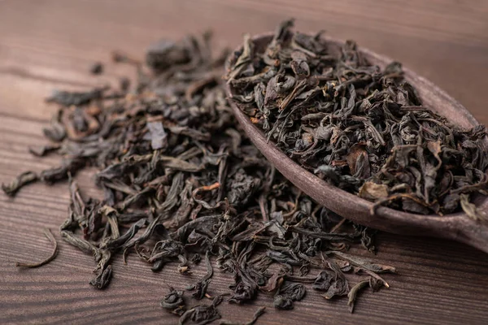

• Black Tea •
Fully oxidized tea leaves, which gives it a dark color and rich flavor. Black tea typically contains more caffeine compared to other types of tea.
• Green Tea •
Made from unoxidized leaves and is one of the least processed types of tea. It contains the most antioxidants and beneficial polyphenols.

• White Tea •
Made from young or minimally processed leaves. It is the least processed tea and therefore holds onto a high amount of antioxidants.
• Yellow Tea •
A rare and expensive type of tea that undergoes a slow drying phase, which gives it a yellowish color and a unique taste, similar to green tea but mellower.